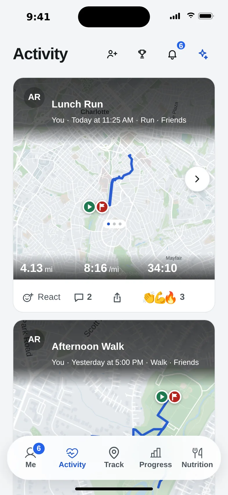
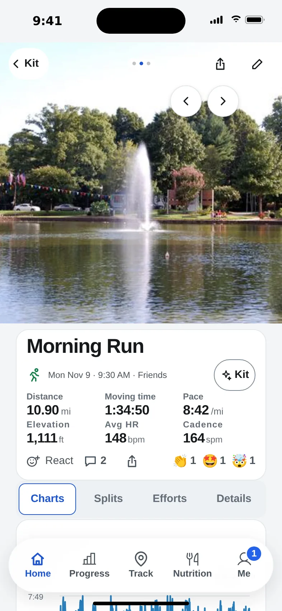

Search by name and send a request.
React to or comment on friends’ workouts.
Find friends, share workouts, react and comment.
Shared workouts, newest first.
Share the run, keep the rest private. Every post has its own audience.
Fictional demo data · sample training history

Audience: Friends
React to or comment on friends’ workouts.
Leave a cheer or comment on a friend's activity.

Reactions and comments make a shared workout feel like a conversation.
Set a default, then change any single workout before you share it.
Friends see this in their feed.
Audience: Friends
Photo, bio, stats and sports. Preview what friends see.
Only you see your food, body data and Kit chats.
Recaps, milestones and challenges, when you want to share.